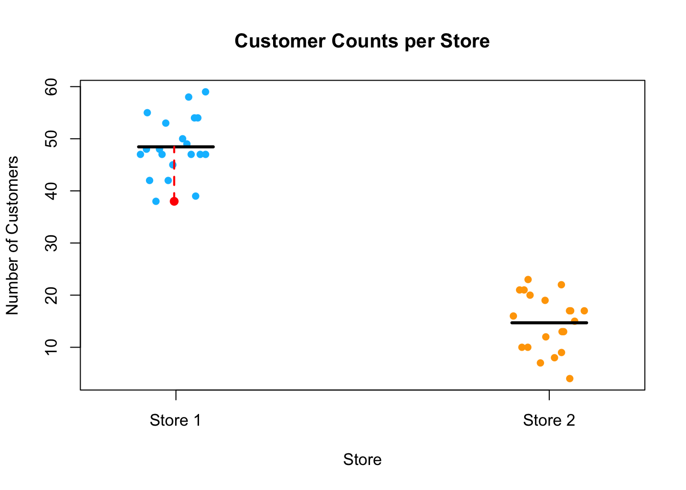

A statistical model is a mathematical representation of how data is generated. It describes the relationship between observed data and underlying factors (parameters) while accounting for random variation. Suppose that we are interested in estimating the age of a tree from its stem diameter. To do this we need to know by how much the stem diameter increases per year. We could describe this relationship or process as follows:
\[D = \alpha + \beta \times Age\] describing a linear increase of diameter with age. Once we have a good idea of how fast diameter increases with age (β) we can predict diameter from age. The (mathematical) model above is a very simple representation of this process with only two parameters, the intercept and the growth rate.
With the chosen parameter values, diameter increases linearly with age. Of course, this model is not realistic except for special situations but it gives us powerful insights. In reality we don’t know \(\beta\), but usually need to estimate it from data. Also, not every tree grows equally fast, because of environmental and individual differences between trees. We can accept that the above is a simple model for the average behaviour of a tree, but to capture variability between trees (because of variability between environmental conditions from tree to tree, variability between individual trees, measurement error), we add an error term.
\[D = \alpha + \beta \times Age_i + e_i\]
The response that we observe is then described by an average behaviour, but the actual observed value will vary around this average. To summarise, the statistical model has a stochastic component which captures variability in the response that cannot be explained by the deterministic part of the model. Another distinguishing feature of statistical modelling is that we obtain estimates of the parameter values from the data, e.g. by fitting a line to the observations, i.e. we learn from data.
More generally
Statistical models are not perfect predictors of the data, rather they attempt to describe the “central tendency” of the observations. To get to the actual observed value some deviation from the central tendency needs to added (i.e. error). Such models typically have the following the form:
A simple example of a statistical model you may have encountered is the mean as a predictor. Suppose you measure the number of customers entering two stores over 20 days. The observed counts for each store fluctuate daily, but you may want to summarize the data using the average number of customers.
For each store \(i\), a basic statistical model for these observations would be:
\[
Y_{ij} = \mu_i + e_{ij}
\]
where:
\(Y_{ij}\) is the number of customers observed on day \(j\) at store 1,
\(\mu_i\) is the true mean number of customers at store \(i\),
\(e_{ij}\) is the error term, representing deviations from the mean.
The error term \(e_{ij}\) accounts for day-to-day fluctuations that cause the actual number of customers to vary around the mean. Below this data is simulated and plotted, with the model overlain. The black line is the mean and the red dashed line represents the error for one observation, i.e. deviation from the fitted model response, in this case the mean.
Code
store1 <-rpois(20, 50)store2 <-rpois(20, 15)storedata <-data.frame(numcust =c(store1, store2),store =factor(rep(c("Store 1", "Store 2"), each =20)))stripchart(numcust ~ store, data = storedata,method ="jitter", pch =16, col =c("deepskyblue", "orange"),vertical =TRUE, main ="Customer Counts per Store",xlab ="Store", ylab ="Number of Customers")means <-tapply(storedata$numcust, storedata$store, mean)segments(x0 =1:2-0.1, x1 =1:2+0.1, y0 = means, y1 = means, lwd =3, col ="black") min_count <-min(storedata$numcust[storedata$store =="Store 1"])min_x <-jitter(rep(1, sum(storedata$numcust == min_count))) points(min_x, min_count, col ="red", pch =16, cex =1.2) segments(x0 = min_x, x1 = min_x, y0 = min_count, y1 = means["Store 1"], col ="red", lwd =2, lty =2)

Another basic example of this structure is a linear regression model:
\[
Y_i = \beta_0 + \beta_1 X_i + e_i
\]
where:
\(Y_i\) is the observed response,
\(\beta_0\) and \(\beta_1\) are unknown parameters representing the intercept and slope,
\(X_i\) is the predictor variable,
\(e_i\) is the random error term.
Code
# Generate random x values and error termset.seed(123) # Ensures reproducibilityx <-rnorm(35, mean =35, sd =5)error <-rnorm(35, mean =0, sd =5)# Define true model parametersbeta0 <-2beta1 <-1.5# Generate y values based on the regression modely <- beta0 + beta1 * x + error# Fit a linear regression modelmodel <-lm(y ~ x) # This was missing!# Select an observation to highlightobs_index <-20x_obs <- x[obs_index]y_obs <- y[obs_index]y_pred <-predict(model, newdata =data.frame(x = x_obs)) # Scatter plot of data pointsplot(x, y, pch =16, col ="darkseagreen",xlab ="X", ylab ="Y",main ="Scatter Plot with Regression Line",cex.lab =1.5, cex.axis =1.2, cex.main =1.5)# Add regression lineabline(model, col ="black", lwd =2)# Highlight the observed pointpoints(x_obs, y_obs, col ="red", pch =16, cex =1.2) # Draw a dashed vertical line from the predicted value to the observed valuesegments(x0 = x_obs, x1 = x_obs, y0 = y_pred, y1 = y_obs, col ="red", lwd =2, lty =2)
Notation
When we fit the model to our data, we estimate the unknown parameters using observed data. We denote these estimates using hat notation to distinguish them from the true (but unknown) population parameters:
\[
\hat{\beta}_0, \quad \hat{\beta}_1
\]
Similarly, the fitted values (model-predicted responses) are denoted as: